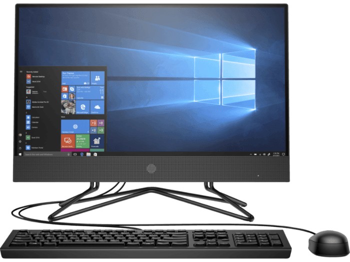
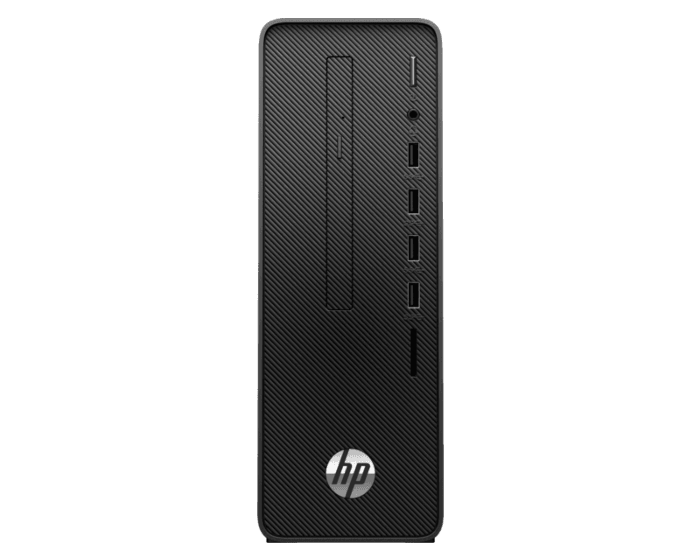
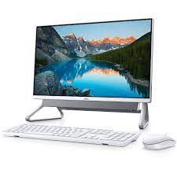
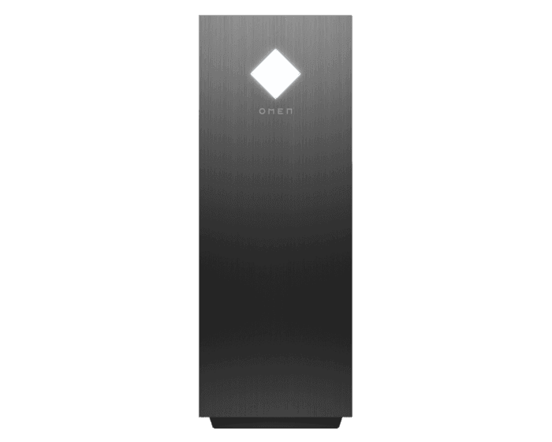
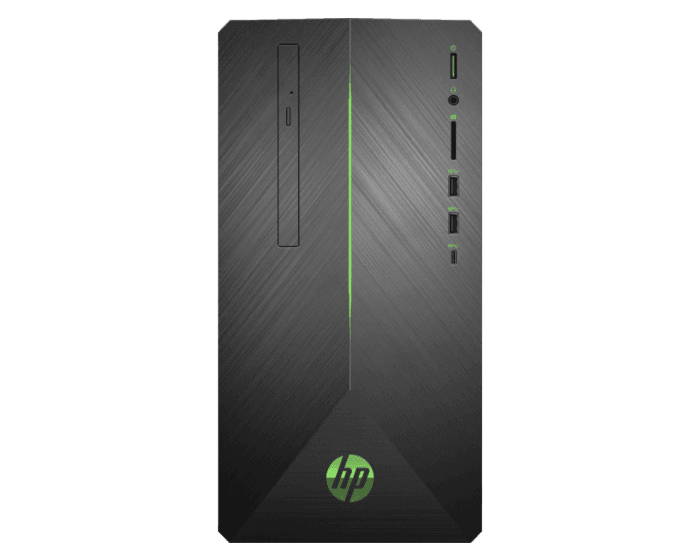
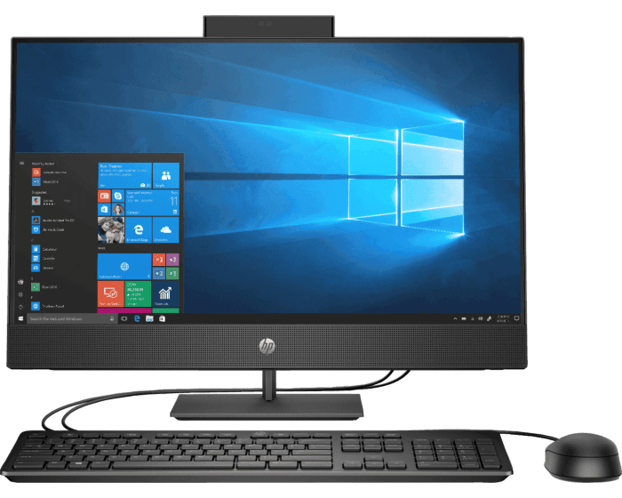

All in One HP 200 G4
El diseño comercial sencillo de la asequible PC Todo-en-uno HP 200 22 luce
genial en su espacio de trabajo. Los potentes procesadores Intel®[2] le
permiten realizar las tareas diarias de manera rápida, y la pantalla de 21,5"
en diagonal ofrece suficiente especio para trabajar junto a sus colegas.
Además de ser asequible, la PC Todo-en-Uno HP 200 22, que está equipada
con nuestra más reciente y elegante pantalla triple de microborde, deja
espacio libre en su escritorio. Diseñada para una rápida implementación,
solo tiene que desembalarla, ubicarla, conectarla y ponerse a trabajar.
|

Desktop HP 280 G5
Afronte sus tareas cotidianas a un precio accesible con el equipo HP
280 SFF. Obtenga la potencia de computación confiable que necesita
mientras minimiza el costo total de propiedad: realmente una inversión inteligente.
Proteja su inversión y sus datos con firmware, Trusted Platform Module,
HP DriveLock y un cierre de seguridad físico. Un sensor de intromisión
opcional y un sistema de cierre con cable integrado proporcionan mayor
seguridad para mantener sus dispositivos con cable protegidos.
|

All in One HP 24-df1004la
La HP All-in-One es una computadora que combina el diseño ergonómico,
funcionalidad y poder. Dándote seguridad y confianza para que todos en
tu familia la utilicen sin ninguna preocupación. Incluye todo lo que necesitas sin gastar de más.
Diseño ergonómico, con pantalla Full HD ajustable y cámara de privacidad
con sistema de bloqueo. Hecha para que la utilices con confianza.
|

Desktop OMEN 30L GT13-0001la
Es amor al gaming a primera vista. Simplemente su diseño te deja sin palabras.
Inmediatamente sentirás que no podrás separarte de ella, el tiempo pasará volando
y no tendrás ojos para nada más.
Lo último en tecnología con procesadorIntel® Core™ i de 10ª generación y tarjeta
gráfica NVIDIA® GeForce® RTX™ 2060, te permiten alcanzar nuevos niveles de
superioridad contra tu rival, deja que el mundo conozca tu nombre.
|

Desktop HP Pavilion Gaming 690-002bla
Procesador AMD Ryzen™ 5
Windows 10 Home 64
SDRAM DDR4-2666 de 8 GB (1 x 8 GB)
SATA de 1 TB y 7200 rpm
NVIDIA® GeForce® GTX 1050 Ti (GDDR5 de 4 GB dedicados)
|

Todo-en-Uno HP ProOne 400 G5
El elegante equipo Todo-en-Uno HP ProOne 400 de 23,8", que es fácil de
implementar y cuenta con gran cantidad de funciones, ofrece un diseño
contemporáneo con funciones de rendimiento profesional, colaboración,
seguridad y capacidad de administración.
Diseño elegante, una pantalla antirreflectante con microbordes y
líneas claras permiten que este equipo Todo-en-Uno sea ideal para
un mostrador o entornos de trabajo con espacio restringido.
|